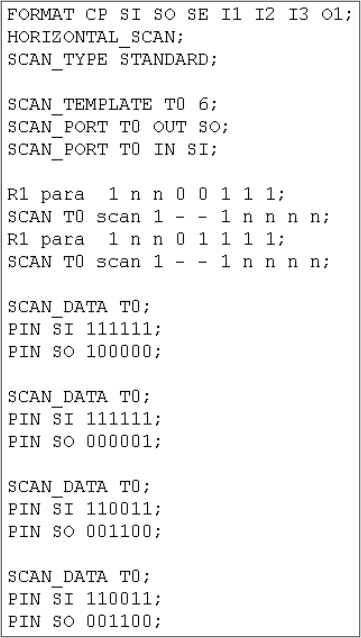
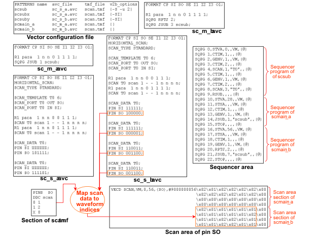

Defining Scan Subroutines in the ASCII Interface
Since the data for every SCAN instruction of the subroutine is stored at a different location for every call of the subroutine, you must specify these data in the ASCII vector file as often as the subroutine is to be called in the vector setup. Thus you will have to define three different instances for each of the two SCAN instructions in the example illustrated in Understanding Scan Subroutines.
Because of this requirement, the ASCII vector files for scan subroutines have a special format. Their scan instances are split. The SCAN rows with the parallel part are specified in the ASCII vector table as before, but the template instances are specified separately below the ASCII vector table with a header line that consists of the special keyword SCAN_DATA and the template name.
The following figure shows such an ASCII vector file:

The order and number of the SCAN_DATA sections are used to determine which SCAN_DATA sections belongs to which SCAN row, and how often the subroutine is to be called. In the figure above, the scan subroutine contains two scan calls and four SCAN_DATA sections. This implies that the scan subroutine is to be called twice, once with the first two sections, and once with the last two sections. The first SCAN row is associated with the first and third section, the second row with the second and fourth section.
Observe that only the template instances are specified in the SCAN_DATA sections. The parallel parts for the different calls of the same SCAN instruction are always the same.
If one scan subroutine is to be called from several MAIN patterns, the structure of the Vector Memory requires that you create a separate ASCII vector file of the subroutine for each of these MAIN patterns (see the figure below). In this case, it must be ensured that the sequencer program of the subroutine is translated only once. To account for this and other similar situations, ASCII vector files for scan subroutines can be translated in three different ways, which are controlled by certain v2b parameters as specified in the following table:
v2b parameters |
Effects |
|---|---|
-S |
Both the ASCII vector table and the scan instance data are translated. In this case the ASCII interface creates a rudimentary MAIN pattern from which the subroutine is called. If the ASCII vector file contains m blocks of SCAN_DATA sections, this MAIN pattern will repeat the call m times (using the RPTJ instruction). |
-SI |
Only the SCAN_DATA sections are translated. In this case only the download commands for the scan vectors are created, but no sequencer program and no download commands for the parallel vectors. |
-S -u <st_w> |
Only the ASCII vector table is translated. A sequencer program and download commands for the parallel vectors are created, but no commands for the scan vectors. The numerical value <st_w> of the -u parameter defines the so called stepwidth. The stepwidth is the amount by which the vector translation increments the minor instance offsets of successive SCAN instructions (if they use the same template) within the subroutine. |
If you use the -u or the -SI option, you have to insert the call of the subroutine (JSUB sequencer instruction) and an eventual counted loop (RPTJ sequencer instruction) into the ASCII vector file of the MAIN pattern manually.
You must also take care to select the stepwidths and major instance offsets so that the uniqueness of all calculated instance numbers is ensured for all calls of a subroutine. The stepwidth must be so large that the sums of any minor offset and any loop index are different. For the example of the figure above, a stepwidth of 2 is sufficient, but 1 would be too small; for since the subroutine is called twice, the sum of the second minor offset and loop index 1 would then be equal to the sum of the first minor offset and loop index 2. This problem can always be avoided if you set
stepwidth = maximum_counted_loop,
where maximum_counted_loop is the greatest value of any RPTJ instruction that applies to a call of the scan subroutine in question.
For the major instance offsets, the uniqueness of the calculated instance numbers can be ensured in the case of two subroutine calls by setting
major_offset_2 > major_offset_1 + max_minor_offset + repeat_factor_1,
where
major_offset_2 = major instance offset of the second call,
major_offset_1 = major instance offset of the first call,
max_minor_offset = maximum minor instance offset of the subroutine,
repeat_factor_1 = value of an eventual RPTJ instruction for the first call.
This rule of thumb can be generalized to any number of calls.
The following figure shows the translation of a scan subroutine that is called from two different MAIN patterns. In one of these the call is repeated once:

The first row of the vector configuration file serves to create the sequencer program of the subroutine and the download commands for its parallel vectors. The second and third row create the scan data for the two calls. The last two rows define the two calling patterns.
Observe also the following points in the example:
- The pattern names must be different in every row of the vector configuration file. Since, however, the dummy pattern names of the second and third row will not occur in the generated vector setup file, this presents no problem.
- Since
- the scan data of a scan subroutine is stored in the scan area section of the calling pattern, and
- the structure of the Vector Memory requires that the start address for the scan data of any
pattern is a multiple of 28,
the scan data for the calls from two different patterns must be passed to aiv in two different files. If all 6 SCAN_DATA sections were contained in one and the same file, the scan data for scmain_b would start at address 14, and thus would not be found by SmarTest.
- In the vector configuration file, the order of the scan data translations must correspond to the order of the MAIN patterns to which the scan data belong. Thus, since the scsubx row precedes the scsuby row, the row for pattern scmain_a must precede the row for scmain_b.